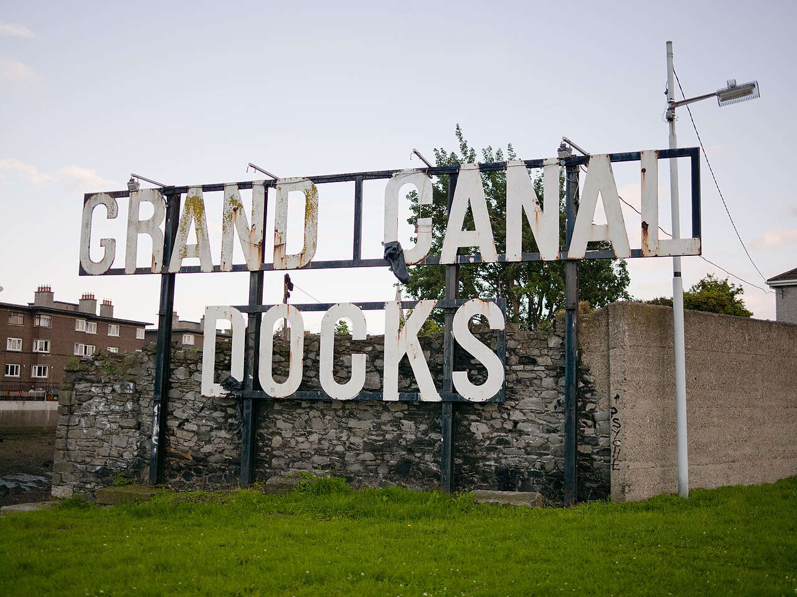
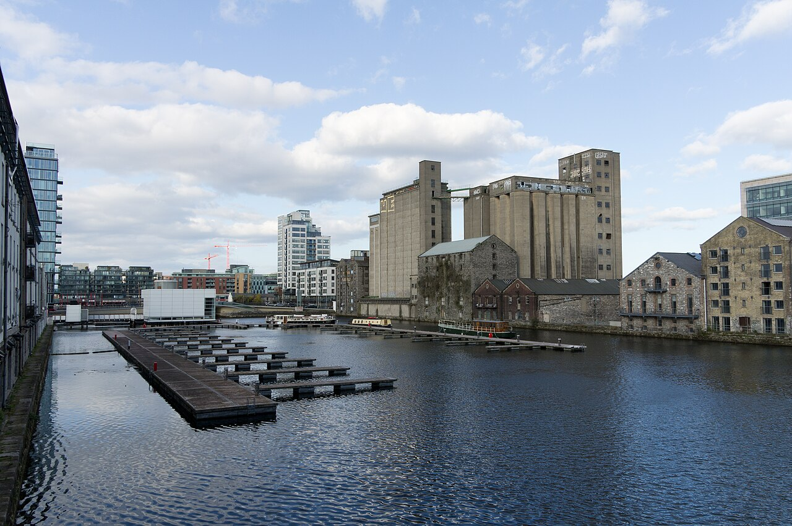
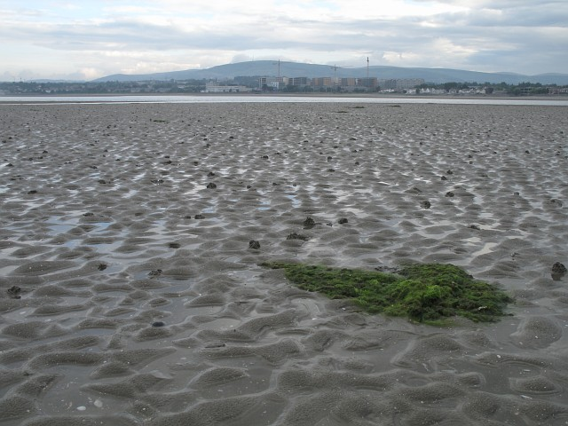
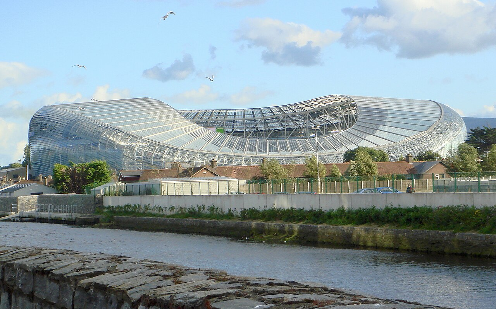

Action board / 6 moves
Only actions that unlock the next move.
Dublin compass / 5 areas
Rank by usefulness, not romance.
DART / coast
Luas / south
Google / Barrow St
City Centre
Sandymount
Ranelagh
Rank
Area
Use
Watch
1Grand Canal DockWalkable, simplest work rhythmHighest demand
2RingsendShort walk/cycle, practical landingLimited supply
3SandymountDART/cycle plus sea resetQuieter nights
4BallsbridgePolished, close, low frictionPrice
5RanelaghSocial southside, Luas accessTransfer time
Checklist / 8 max
Track the gates, not the noise.
Sources / strongest links
Social + football engine
18 contact points, then a stable squad.
3 x 6 system
3/week One recurring social room, one football touch, one work-adjacent invite.